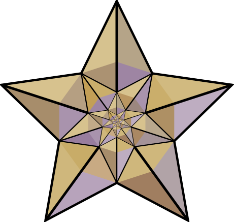

Kitabın 3. bölümü, ibriklerin, kan alma teknelerinin ve abdest alma makinelerinin yapımı üzerinedir.
Hızlı Erişim İçin Bu Etiketleri Kullanınız !
 Abdest Almak İçin Düzenlenmiş Otomat
Tavus Kuşlu İbrik
Tavus Kuşlu, Sabun ve Havlu Uzatan Robotlu Lavabo
Alınan Kan Miktarının Ölçüldüğü Kan Teknesi
İki Katipli Kan Ölçme Teknesi
Muhasipli Kan Ölçme Teknesi
Abdest Almak İçin Düzenlenmiş Otomat
Cezeri; el yüz yıkamak veya abdest almak için çok ilgi çekici bir başka otomatik araç daha geliştirmiştir. Burada yerden 25 cm yükseklikte bir kürsü, onun köşelerinde her biri 50 cm yükseklikte 4 sütun, onların tepelerinde her tarafı kapalı bir depo, deponun üstünde kubbe şeklinde bir kapak ve onun da üstünde bir kuş vardır. Kürsünün üstünde, sütunların arasında, yarı diz çökmüş konumda bir çocuk hizmetli bulunmaktadır. Sağ elinde ibrik, sol elinde ise havlu ve tarak vardır. Kürsünün önüne bitişik, kullanılmış suyun akacağı bir yarım leğen ve onun içinde bir ördek vardır.
İşleyişine gelince: Üstteki deponun üstündeki bir halka, diğer birçok araçta olduğu gibi çok az bir miktar çevrilmektedir. Bundan sonra depodan ibriğe, dışarıdan görünmeyen bir yoldan su akmaktadır. İbrik suyla dolarken içinde sıkışan hava görünmeyen bir düdüğü öttürmekte ve bu ses tepedeki kuşun sesi sanılmaktadır. İbrik dolduktan sonra düdük sesi kesilmekte, ancak bundan sonra ibrikten su akmaya başlamaktadır. Burada da yine abdest hazırlığı yapabilmek için ilgi çeken bir bekleme süresi vardır.
Abdest alınırken kullanılan su öndeki leğene dolmaktadır. Abdest sona ererken leğendeki su, içindeki ördeğin boynunun kıvrımına kadar yükselince ördek tarafından içilmektedir. Bundan hemen sonra hizmetli çocuk sol elindeki havlu ve tarağı öne uzatmaktadır. Abdest alan efendi kurulandıktan ve tarandıktan sonra onları yerlerine koymakta, araç salondan çıkarılmaktadır.
Burada Cezeri, yine musluk görevi yapan bir valf, içinde hava sıkıştırılabilen bir ibrik, bu basınçlı havayla çalışan bir düdük, ördeğin içinde, ağzından kuyruğuna kadar uzanan bir sifon ve havlu ile tarağı taşıyan kolun hareket mekanizmasını çalıştıran bir şamandıra kullanmaktadır. Kürsünün içine dolan kullanılmış su, abdestin sonunda kürsünün arkasındaki bir musluktan boşaltılmaktadır.
Başa Dön
Tavus Kuşlu İbrik
Cezeri, yine abdest almak veya el yıkamak için tavus kuşu şeklinde bir otomatik lavabo yapmıştır. Tavus kuşu çok süslü, mağrur görünümlü, çok sevilen ve uçamayan bir kuş türüdür.
Bu araç şöyle kullanılmaktadır: Tavus kuşunun gövdesinin ve kuyruğunun içi boştur. Hizmetli, arka odada bu boşlukları suyla doldurduktan sonra kuşu efendinin abdest alacağı salona getirerek bir sehpanın üzerine yerleştirmekte, gagasının altına da bir leğen koymaktadır. Bu sırada etrafa fark ettirmeden, kuyruğunun ucunda hilal şeklinde, tüylere benzeyen bir tutamağı az bir miktarda çevirmektedir. Tavus kuşu bir süre sonra gagasından su akıtmaya başlamaktadır. Yine bu bekleme zamanı ilgi çekmekte, efendi de bu esnada abdest hazırlığı yapmaktadır. Abdestten sonra tavus kuşu salondan çıkarılmaktadır.
Cezeri bu araçta, musluk görevi yapan bir valf ile suyun gagadan otomatik olarak boşalmasını sağlayan bir sifon kullanmaktadır. Aracın hem dolu hem de boşken öne veya arkaya devrilmemesi için gerekli denge şartları sağlanmaktadır.
Başa Dön
Tavus Kuşlu, Sabun ve Havlu Uzatan Robotlu Lavabo
Cezeri; el yüz yıkamak veya abdest almak için yaptığı tavus kuşunu bu otomatik lavaboda da kullanmaktadır. Hizmetli, tavus kuşunu aracın en üstüne koyarken kuyruğunun üzerindeki tutamağı etrafa belli etmeden biraz çevirmektedir. Bir süre sonra kendiliğinden tavus kuşunun gagasından su akmaya başlayacaktır. Bu arada efendi de abdest hazırlığı yaparken bu gecikme diğerlerinde olduğu gibi ilgi çekmektedir. Efendi ellerini kısa bir süre yıkarken, Cezeri’nin köşk adını verdiği kapalı bölmenin iki kapısından biri açılmakta ve içinden bir çocuk çıkarak elindeki sabun kabını uzatmaktadır. Efendi sabunu da kullanarak abdest almaya devam etmekte, sonuna yakın tavus kuşunun gagasından akan su tükenmek üzereyken köşkün ikinci kapısı açılmakta ve içinden başka bir çocuk çıkarak efendiye havlu uzatmaktadır. Efendi kurulandıktan sonra araç salondan çıkarılmaktadır.
Başa Dön
Alınan Kan Miktarının Ölçüldüğü Kan Teknesi
Doğu Anadolu’da ve Mezopotamya’da “rahip” kelimesinin karşılığı olarak daha çok “keşiş” kelimesi kullanılmaktadır. Keşişler, Hristiyanlıkta hiç evlenmeden kendisini dine adayan kişilerdir. Cezeri’nin bu cihazda keşiş figürünü kullanması, o dönemde hastalardan kan alma işlemini daha çok keşişlerin yaptığını gösteriyor. Bir Doğu destanı olan Kerem ile Aslı’da, Aslı’nın keşiş olan babasının aynı zamanda diş çekmesi de o dönemde ve o yörede insanların sağlık sorunlarıyla daha çok keşişlerin ilgilendiklerini göstermektedir.
Araç şöyle işlemektedir: Hastadan alınan kan tekne şeklindeki bir kaba akıtılmaktadır. Teknenin içinde, tam ortasında kapalı bir bölme vardır. Bu bölmenin ve alt kısmının içinde, dışarıdan göremediğimiz bazı düzenekler vardır. Tekneye dökülen kan, göremediğimiz bir delikten altlığın içine akmaktadır. Bu sırada teknenin ortasındaki kapalı bölmenin üstünde ayakta duran bir keşiş, yavaşça dönerek, elindeki asayla teknenin kenarlarındaki bölümlenmiş çizgiler üzerinde alınan kan miktarını göstermektedir. Bu miktar en çok 120 dirhem (yaklaşık 380 cm³) olmakta ve bu miktar tamamlanana kadar da keşiş kendi etrafında 360° dönmektedir.
Cezeri araçlarını hem estetik yöntemlerle hem de insanların ihtiyaçlarını karşılayacak şekilde yapmaktadır. Kanı alınan hasta, keşişin dönüşünü seyrederken acısını unutmakta, ayrıca olması gerekenden fazla kan alınmadığını görerek güven duymaktadır.
Cezeri bu araçta bir şamandıra, ona bağlı makara tertibatı ve bir karşı ağırlık kullanmaktadır.
Başa Dön
İki Katipli Kan Ölçme Teknesi
Cezeri, yaptığı ikinci kan ölçme cihazına “iki katipli kan ölçme teknesi” adını vermektedir. Burada ise teknenin ortasından yükselen dört sütunun tepesinde, üzerinde iki katibin oturduğu bir platform bulunmaktadır. Katiplerden biri, oturduğu yerde 360 derece dönerek elinde bulunan çubuk şeklindeki kalemle, etrafındaki gösterge üzerinde alınan kanın miktarını göstermektedir. Diğeri ise aynı görevi, ellerinin arasından yükselen dar ve uzun bir levha üzerindeki işaretlerle yapmaktadır. Bu araç da hastalar için seyretmeye değer bir güzelliktedir. Teknenin içinin ortasında, çok delikli güzel bir kubbe, kanın, altlığın içine akışını gizlemektedir.
Başa Dön
Muhasipli Kan Ölçme Teknesi
Cezeri; “iki katipli tekne”sine bazı yenilikler ekleyerek iki ayrı kan ölçme cihazı daha yapmıştır. Bunlardan birine “muhasipli kan ölçme teknesi” demektedir. Burada, iki katipli teknede bulunan bütün özelliklerle birlikte, iki katibin arasında ve daha arka planda, Cezeri’nin “burç” adını verdiği bir bölmede, “muhasip”, yani hesap yapan bir kişi de vardır. Bu kişi her 10 dirhem (yaklaşık 32 cm³) kan alındığında sağ el parmaklarıyla 10 ve 10’un katlarını ifade eden işaretler yapmaktadır. Böylece aracın bütününde bir görsel şölen oluşmaktadır.
Başa Dön
.JPG)